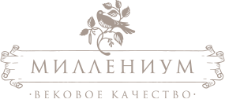
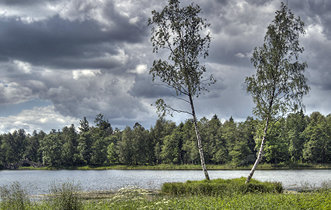

<!doctype html>
        <html lang="ru">
        <!--<![endif]--><head>
	<meta charset="utf-8" />
	<title>Миллениум — Вековое качество продукции из сибирской березы: паркет штучный, декинг, сайдинг </title>
	<meta name="description" content="Миллениум">
	<meta name="author" content="Миллениум">
	<!--[if lt IE 9]>
	<script src="http://html5shim.googlecode.com/svn/trunk/html5.js"></script>
	<![endif]-->
        <script type="text/javascript" src="http://ajax.googleapis.com/ajax/libs/jquery/1/jquery.min.js"></script>
       <link rel="stylesheet" href="css/reset.css">
       <link rel="stylesheet" href="css/typography.css">
       <link rel="stylesheet" href="css/style.css">
</head>
<body class="first-column content-page">
<div id="maincontainer">
    
	<header class="header clearfix">           
            <div class="phone">
                8 903 578-78-41
            </div> 
            
            <a id="logo" href="index.html">
                
	    </a>
            
            <div class="phone p-right">
                8 916 964-24-26
            </div>       
	</header>
    
        <nav id="main-menu" class="r_menu">
            <div class="nav-wrapper">
            <ul class="clearfix">
                <li class="first"><a href="products_upd.html" title="ПРОДУКЦИЯ">ПРОДУКЦИЯ</a></li>
                <li><a href="services.html" title="УСЛУГИ">УСЛУГИ</a></li>
                <li><a href="about_birtch.html" title="О БЕРЕЗЕ" class="active">О БЕРЕЗЕ</a></li>
                <li><a href="manufacture.html" title="ПРОИЗВОДСТВО">ПРОИЗВОДСТВО</a></li>
                <li class="last"><a href="contacts.html" title="КОНТАКТЫ">КОНТАКТЫ</a></li>
            </ul>
            </div>
        </nav>
   
    <div class="main-wrapper">
        <div class="section tops">     
           
        <div class="main-wrapper-1">
            <div class="main-wrapper-2"><div class="main-wrapper-3"><div class="main-wrapper-4">
                <div class="bgcolor-wrapper clearfix"><div class="bgborder-wrapper clearfix">   
                        
       
                 
                        
                <section id="content">
                    <div class="contentwrapper">
                        <h1>
                            Почему береза?
                        </h1>                      
                        <p>
                            Мебельный щит – плитный материал, изготовленный из цельных или сращенных ламелей, склеенных между собой на гладкую фугу. 
                        </p>
                        
                        
                        
                        <p>
                            Мы предлагаем как сращенный мебельный щит, так и цельноламельный. В зависимости от сортировки исходных заготовок мебельный щит из русской березы представлен четырьмя сортами А/В, А/С, В/С и С/С. Первая буква - обозначение сорта лицевой поверхности, вторая буква - обозначение качества поверхности обратной стороны.Березовый мебельный щит используется для оформления стеновых панелей, кабинетов и кухонь, обшивки потолков и стен, изготовления подоконников, ступеней лестниц.
                        </p>   
                        <p>  
                            Широкое применение щит нашел в мебельной промышленности (фасады,
                            двери, филенки, столешницы, столы, стеллажи и др.) Все изделия изготовлены из натурального массива русской березы, а использование экологически чистого клея делает нашу продукцию абсолютно безопасной для здоровья.Высокие требования к качеству мебельного щита гарантируют долгий срок службы, долговечность и надежность.
                        </p>
                        
                    </div>
                </section><!-- /.content -->
                
                 <aside id="leftcolumn">
                     <div class="section">
                     <ul class="about-menu">
                         <li><a href="#" class="active">Почему береза?</a></li>
                         <li><a href="#">Свойства березы</a></li>
                         <li><a href="#">Использование березы</a></li>
                     </ul>
                     </div><!-- /.section -->
                 </aside>  
                
            </div></div></div></div>   </div>       
        </div> <!-- /.main-wrapper-1 -->
        </div>
</div> <!-- /.main-wrapper -->
    
	<footer class="footer clearfix">
            
		<div class="copyright">
                    &#169; 2012 <span>МИЛЛЕНИУМ</span> <br />
                    <a href="http://www.spacebox.ru" title="САЙТ РАЗРАБОТАН В SPACEBOX">САЙТ РАЗРАБОТАН В SPACEBOX</a>
                </div>	
                
                <div class="footer-menu-container clearfix">                   
                   <nav id="footer-menu" class="r_menu">
                        <div class="nav-wrapper">
                        <ul class="clearfix">
                            <li><a href="#" title="twitter"> &nbsp;</a></li>
                            <li class="fb"><a href="#" title="facebook"> &nbsp;</a></li>
                            <li class="vk" title="vkontakte"><a href="#"> &nbsp;</a></li>
                        </ul>
                        </div>                   
                  </nav>
                    
                  <div class="wellcome">
                        CЛЕДИТЕ ЗА НАМИ НА
                  </div>                   
               </div>
            
	</footer>
    
</div>
<script src="js/jquery-1.7.2.min.js"></script>
<script src="js/height_content.js"></script>
</body></html>